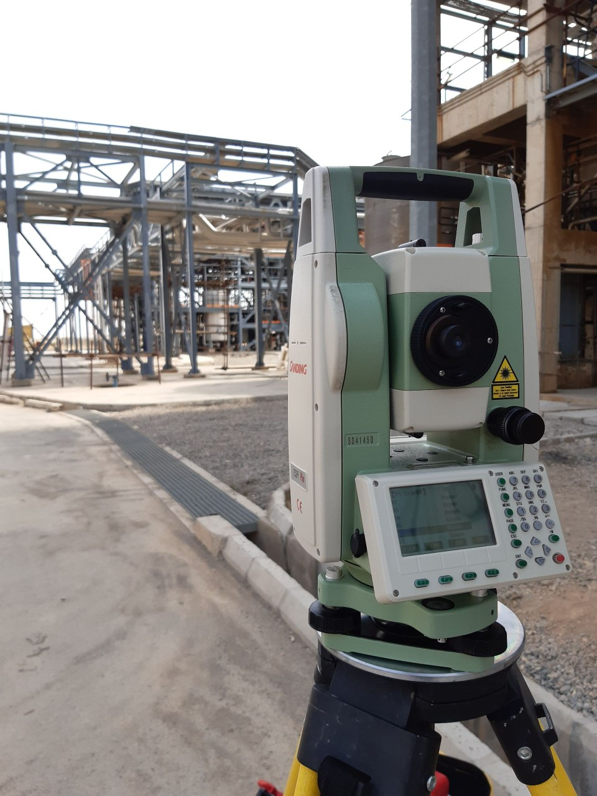
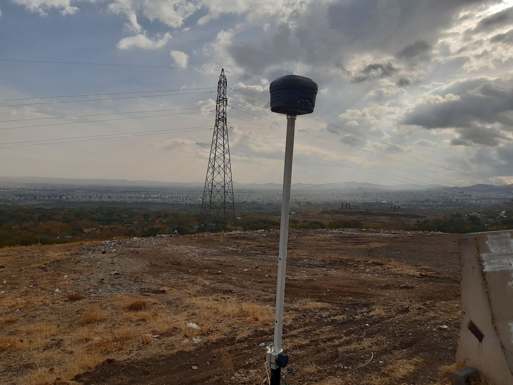

خدمات تخصصی نقشهبرداری
دقت در نقشهبرداری، اطمینان در تصمیمگیری
ارائه خدمات تخصصی نقشهبرداری، تهیه نقشههای توپوگرافی، ثبتی و UTM با دقت و کیفیت حرفهای
مشاهده خدماتخدمات تخصصی
برای مشاهده توضیحات هر خدمت روی کارت موردنظر کلیک کنید.
گالری تصاویر
نمونهای از تجهیزات و فعالیتهای نقشهبرداری






درباره ما
مهندس رضا نامنی با ارائه خدمات تخصصی نقشهبرداری، در زمینه تهیه نقشههای اراضی کشاورزی، منابع طبیعی، توپوگرافی، کاداستر، ثبتی و UTM فعالیت میکند. هدف، ارائه خدمات دقیق و قابل اعتماد با استفاده از تجهیزات و روشهای تخصصی نقشهبرداری است.
تماس و ارتباط با ما
مهندس رضا نامنی
شماره تماس: 09188109597